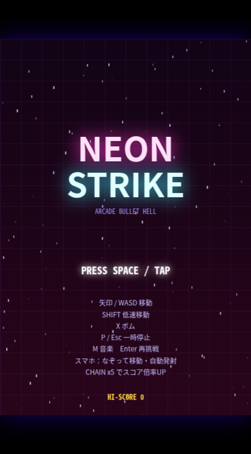
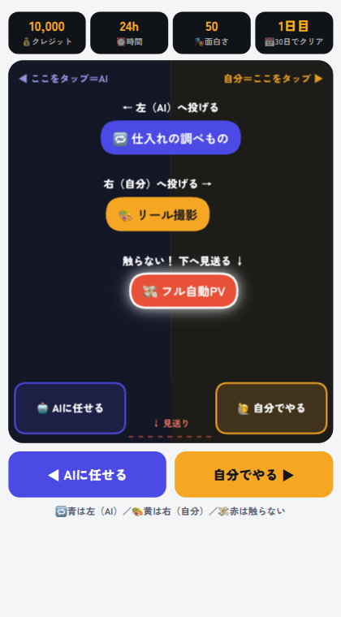
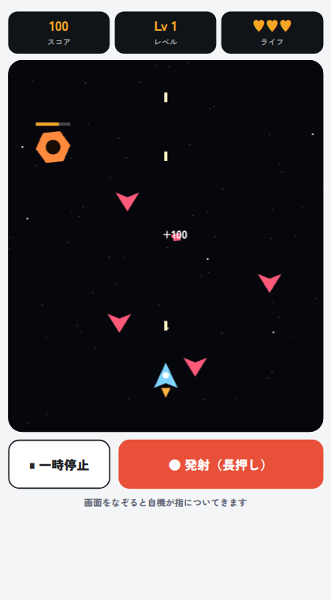
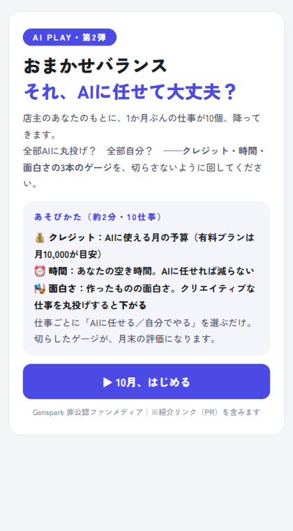
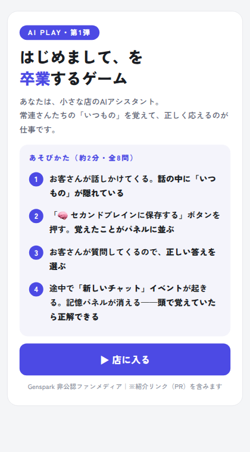

AIに頼んで作ったゲームの置き場。ブラウザだけで遊べます（インストール不要・無料）。プログラムは人間が1行も書いていません。
カードの「遊ぶ →」を押すだけで始まります。保存・登録・インストールは不要。スマホは指でなぞる操作です。

降りしきる敵弾をすり抜けて撃つ本格弾幕。すり抜けも得点、敵弾がひと気に得点に変わるボム、巨大ボス、シンセBGM付き。
🛠 AIチャットのClaudeが作成（約3万字）→ エージェントが回収して公開
遊ぶ →
落ちてくる仕事を、左（AI）か右（自分）に投げ分ける。赤い「全部おまかせ動画」に触るとクレジットが消える。30日回せたらクリア。
🛠 Gensparkのエージェントが作成（チャットで依頼）
遊ぶ →
上から攻めてくる敵を撃ち落とす宇宙シューティング。倒すほどレベルが上がり、弾も3方向に。スマホはなぞって移動。
🛠 Gensparkのエージェントが作成（仕様ベースで再現）
遊ぶ →
1か月ぶんの仕事10個が降ってくる。クレジット・時間・面白さの3本のゲージを切らさない判断が問われる。約2分。
🛠 Gensparkのエージェントが作成（チャットで依頼）
遊ぶ →
常連さんの「いつもの」を覚える店員ゲーム。全8問・約2分。AIの「記憶」の仕組みが、遊べば分かります。
🛠 Gensparkのエージェントが作成（チャットで依頼）
遊ぶ →このサイトはGensparkの非公認ファンメディアが運営しています。Genspark社とは無関係です。
運営者の別サイト（まかせるAI生活・AI WIRE）へのリンクを含みます（同サイトはアフィリエイト広告を利用します）。実在の人物・店舗・キャラクターとは関係ありません。